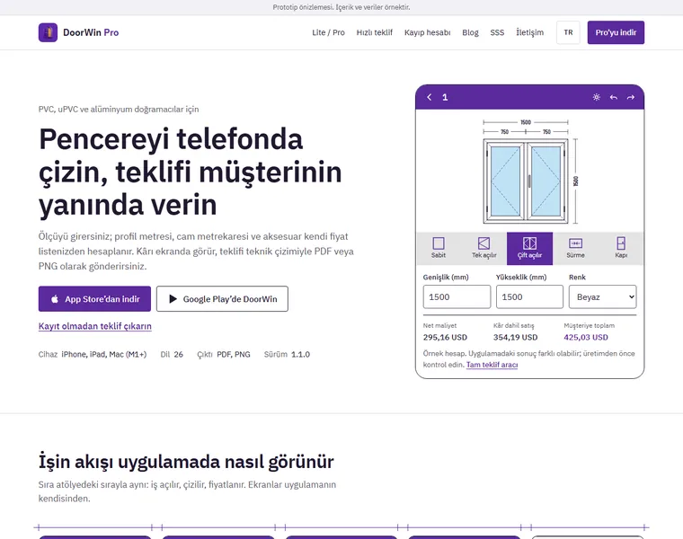

Web sitesi prototipi · ilk tur
Brifteki ana sayfa, SEO, GEO, çoklu dil, SSS, blog ve yönetim paneli çalışır durumda. Panelde değiştirdiğiniz her şey aynı tarayıcıda siteye yansır. Aşağıdan bir tasarım yönü seçin.
Parola ekranda yazılı. Bir başlığı değiştirip siteyi yenileyin.
Ölçü ve fiyat girin, çizim ve kâr canlı değişsin, PDF kaydedin.
Elle teklifin aylık maliyeti ve plan ücretinin kaç günde karşılandığı.
Mağaza bilgileriyle tablo ve dört soruluk öneri.
Gönderilen talep panelde puanlanmış olarak görünür.
Almanya sayfası euro ve o ülkenin vergi oranıyla açılır.
Her dilin kendi adresi, SEO alanı ve içeriği var. Panelden yeni dil eklenir.
Bu bir prototiptir. Trafik ve Google verileri örnektir ve panelde öyle işaretlidir. Yorum kartları örnek yerleşimdir. Uygulama görselleri yalnız önizleme amacıyla kullanılmıştır. Formlar hiçbir yere veri göndermez.